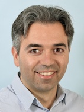

Welcome!

I am a Professor of Astrophysics at the University of Milan Bicocca and, until August 2021, a Swiss National Science Foundation Professor at ETH Zurich. Before my current appointments, I was a Postdoctoral Fellow at the University of California Santa Cruz and a Postdoctoral Research Associate at the Institute of Astronomy, Cambridge. I devote my main research efforts to make the "dark" Universe and its filamentary network that we call the "Cosmic Web" visible to our optical telescopes using both numerical simulation and observations with the most advanced astronomical instruments on 8-10m class telescopes. If you would like to know more about my past and current research follow this link.